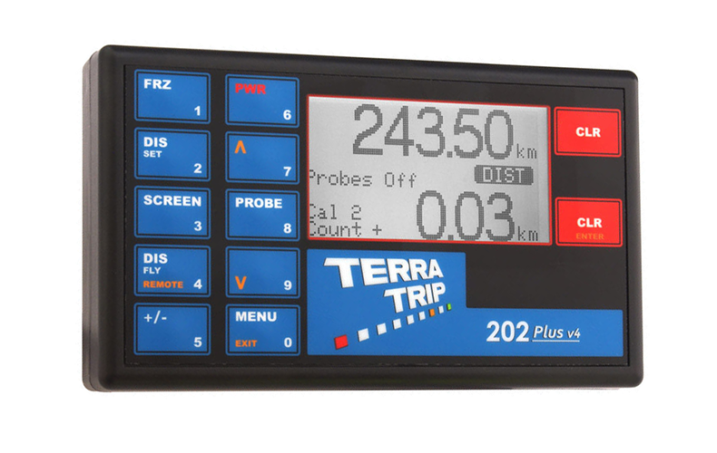

Terratrip 202 plus
Pris: 2459kr
Beskrivelse: Grafisk display, der viser Total afstand, intervalafstand og hastighed. Valgfri fjernbetjening (del nr. T016G) kan monteres, og dette viser Interval distance, fart. Valgfri fjernbetjeningsenhed er tilgængelig via enten fjernbetjening eller håndholdt fjernbetjening.
Specifikationer:
- Total afstandsdisplay op til 999,99 og interval op til 99,99
- Hastighedsindikation
- Kalibrere for miles eller km
- 5 cifferkalibrering
- To kalibreringsnumre
- Manuelt justerbar total afstandsdisplay
- Tæller op og ned facilitet
- Split (fryse) funktion
- LED-displaybelysning
- Valgfri fjernbetjening til hastighed, intervalafstand.
- To sondeindgange
- HR model, der måler 1 meter til vejmåling applikationer.